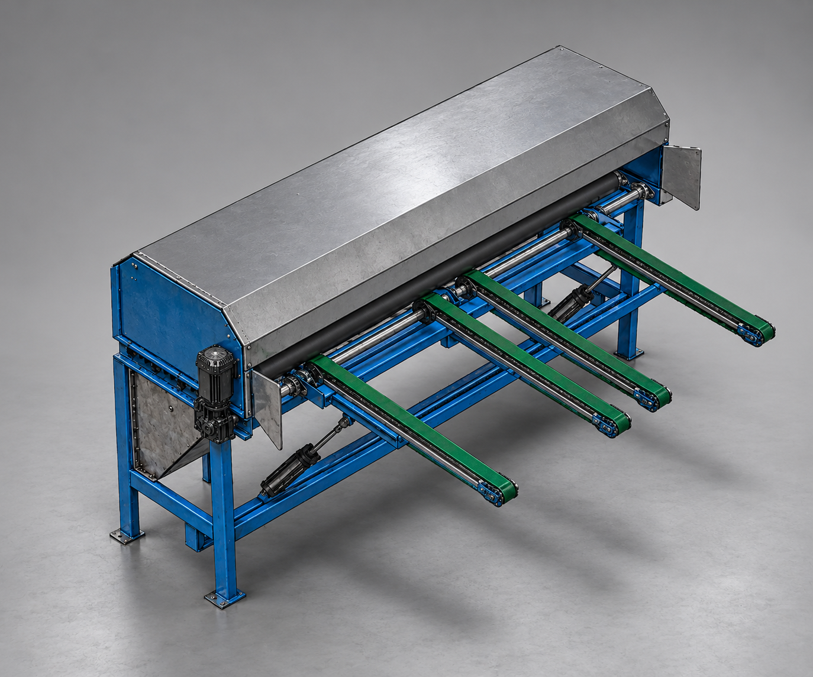
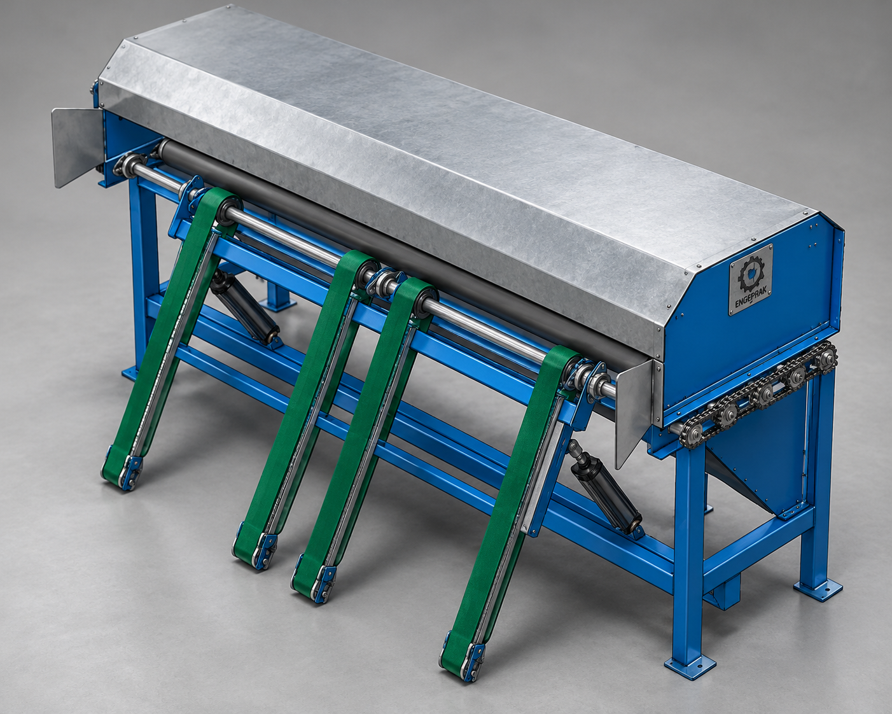
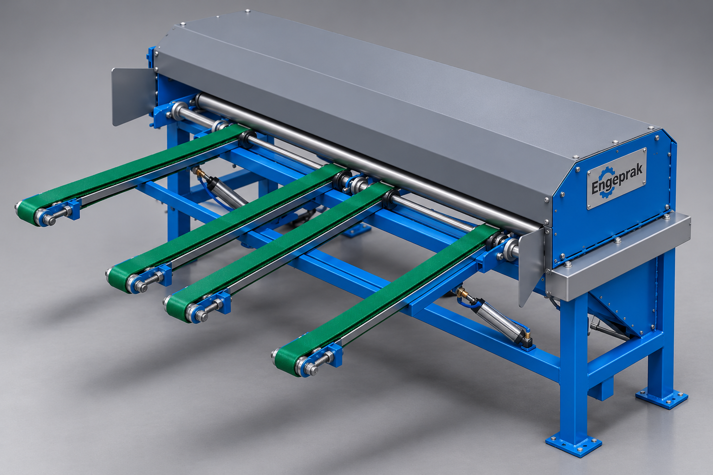
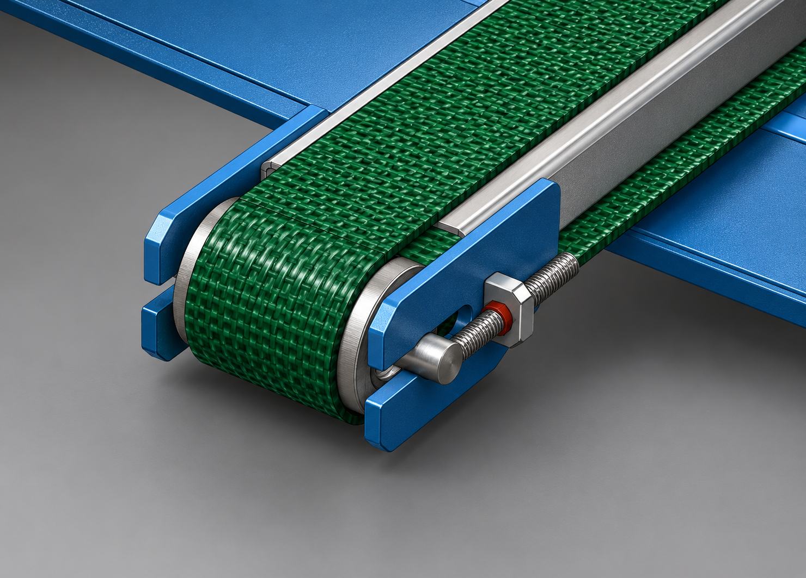
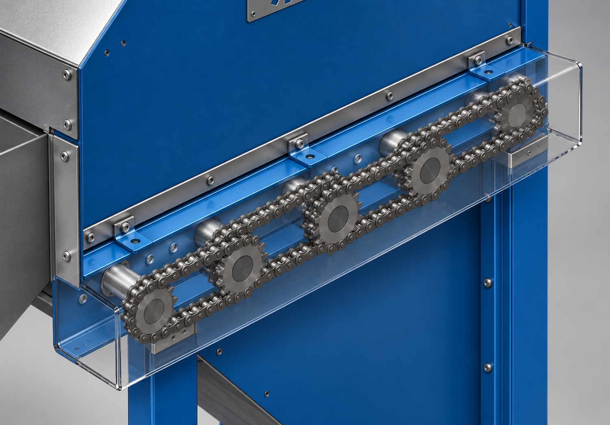

Manual Técnico Digital
ESTEIRA DE RESFRIAMENTO DE COMPENSADOS — COD. 60.1004 · 165.0001.03.00

1. Esteira elevada — estado operacional
Cilindros pneumáticos estendidos: os braços com correias verdes sobem para ficar por baixo dos compensados após a prensagem. Nesta posição a esteira traciona as chapas para dentro da cobertura de molhagem.

2. Esteira baixa — estado de espera (não operacional na retirada)
Cilindros recolhidos: braços inclinados para baixo. Posição de espera / fora do ciclo de retirada, liberando a área sob a prensa até o próximo acionamento.

3. Vista frontal — braços, correias e cobertura (esteira elevada)
Apresentação do Projeto
Documentação técnica digital de instalação, operação, manutenção e segurança do Conjunto Esteira de Resfriamento de Compensados (código KWC 60.1004 / código cliente 165.0001.03.00). Projeto desenvolvido pela ENGEPRAK Engenharia; desenvolvimento digital KWC Industrial TECH.
Identificação do Equipamento
account_tree Processo de trabalho
Sequência funcional após a prensagem das chapas (compensados):
1 · Fim da prensagem
Com as chapas prensadas ainda quentes, o ciclo de prensa encerra. Os pratos iniciam o movimento de abertura (descida/abertura conforme a linha).
2 · Elevação da esteira (pneumática)
São acionados os cilindros pneumáticos (ISO Ø80 × 350 mm), passando da posição esteira baixa (espera) para a esteira elevada (operacional), posicionando as correias por baixo dos compensados.
3 · Tração enquanto os pratos baixam
À medida que os pratos descem, a esteira traciona os compensados, puxando-os para dentro do equipamento sob a cobertura.
4 · Molhagem / resfriamento
No interior, os compensados são molhados para reduzir a temperatura e evitar empenamento (deformação por choque térmico / umidade residual da prensa).
5 · Queda na caixa e formação do pacote
Na saída, as chapas caem em uma caixa (acumulador). O ciclo se repete até o pacote atingir a altura ideal de empilhamento para retirada.
settings Dados técnicos
Dados obtidos dos orçamentos comerciais e da modelagem do conjunto. Dimensões de envelope geral a confirmar no desenho de conjunto quando disponíveis.
Acionamento elétrico
| Parâmetro | Valor | Unidade / obs. |
|---|---|---|
| Motoredutor | SEW KA37/T DRN80MP4 | cônico + motor |
| Potência | 1,1 | kW |
| Frequência | 60 | Hz |
| Tensão | 220/380 | V (Δ/Y) |
| Corrente nominal | 4,80 / 2,75 | A |
| Velocidade | 1735 / 143 | r/min (motor / saída) |
| Redução total | 12,14 | i |
| Torque saída | 74 (máx. 160) | Nm |
| Eixo oco | Ø30 | mm |
| Montagem | M1A | posição SEW |
| IP / classe térmica | IP55 / 155 (F) | — |
| Pintura SEW | RAL 7031 | cinza azulado |
| Peso approx. | 24 | kg (motoredutor) |
Pneumática de elevação
| Item | Especificação | Qtd. |
|---|---|---|
| Cilindro dupla ação | DS2C-80-350-M-C — haste cromo, amortecimento regulável, magnético | 2 |
| Garfo p/ cilindro | DNC-ISO 80/100 (JG0214) | 2 |
| Fixação macho | CA-80 — ISO Ø80 mm (CF0411) | 2 |
| Filtro-regulador-lubrificador | PCA-1/2-D-MIDI-ST | 1 |
| Válvula solenóide | 52S30038 — 24 VCC | 1 |
Correias (WECO)
| Modelo | Dimensão | Qtd. | Acabamento |
|---|---|---|---|
| W50MV-G | 95 mm × 2925 mm | 4 | FPF (fechada Flexproof) |
| W20V-B | 280 mm × 3000 mm | 1 | FPF |
settings_input_component Tração e elevação
O sistema combina tração por correias verdes nos braços e elevação pneumática do conjunto sob os compensados.

4. Rolete e tensionamento da correia
Cada braço possui correia de alto atrito com rolete metálico e ajuste de tensão por parafuso/porca no suporte azul. Manter alinhamento e tensão uniforme nas quatro vias evita desalinhamento das chapas.

5. Conjunto de corrente / engrenagens protegido
build_circle Itens comerciais
Lista crítica a partir das propostas SEW, Klein Automação e WECO, cruzada com peças da montagem aberta.
| Grupo | Descrição | Código / ref. | Qtd. | Fornecedor | |
|---|---|---|---|---|---|
| Acionamento | Motoredutor cônico KA37/T DRN80MP4 | Prop. SEW 426143805 | 1 | SEW-EURODRIVE | shopping_cart Cotar |
| Pneumática | Cilindro dupla ação DS2C-80-350-M-C | Klein 038609 | 2 | Klein Automação | shopping_cart Cotar |
| Pneumática | Garfo p/ cilindro DNC-ISO 80/100 | Klein 030120 / JG0214 | 2 | Klein Automação | shopping_cart Cotar |
| Pneumática | Fixação macho CA-80 ISO Ø80 | Klein 025058 / CF0411 | 2 | Klein Automação | shopping_cart Cotar |
| Pneumática | Filtro regulador lubrificador 1/2 | PCA-1/2-D-MIDI-ST / STK1002 | 1 | Klein Automação | shopping_cart Cotar |
| Pneumática | Válvula solenóide 24 VCC | 52S30038-24VCC / STK1015 | 1 | Klein Automação | shopping_cart Cotar |
| Correia | Correia W50MV-G 95×2925 mm | WECO 46626 item 1 | 4 | WECO do Brasil | shopping_cart Cotar |
| Correia | Correia W20V-B 280×3000 mm | WECO 46626 item 2 | 1 | WECO do Brasil | shopping_cart Cotar |
| Rolamento | Rolamento 6200 DDU (vedado) · rolinhos de apoio de saída | 6200 DDU · 10×30×9 mm | 4 | Comercial | shopping_cart Cotar |
| Mancal | Mancal flange UCFL208 | SNR UCFL208 | 20 | SNR / comercial | shopping_cart Cotar |
| Transmissão | Elos ASA 60 (interno + externo) | Modelo CAD | 66 + 66 | Comercial | shopping_cart Cotar |
| Pneumática | Articulação fêmea ISO 80 + ponteira garfo M20 | Modelo CAD | 2 + 2 | Comercial | shopping_cart Cotar |
play_circle_outline Instruções de Operação
- Verificar pressão pneumática no FRL e estado da válvula 24 VCC.
- Confirmar sentido de giro do motoredutor e tensionamento das quatro correias W50MV-G.
- Ao liberar a prensa, acionar a elevação dos cilindros para posicionar a esteira sob os compensados.
- Iniciar a tração; acompanhar a entrada das chapas sob a cobertura de molhagem.
- Garantir pulverização/molhagem adequada para baixar temperatura e evitar empenamento.
- Observar a queda na caixa de saída até a altura ideal do pacote; então retirar/encaminhar o pacote.
- Retornar a esteira à posição de espera (cilindros) antes do próximo ciclo de prensa.
Boas práticas
Não forçar tração com cilindros fora de curso; não operar sem proteção de corrente; drenar condensado do FRL no início do turno; manter guias laterais limpas para entrada alinhada das chapas.
construction Planos de Manutenção
| Periodicidade | Atividade | Observação |
|---|---|---|
| Diário | Inspeção visual de correias, vazamentos de ar e nível de água/resíduos na cobertura | Operador |
| Semanal | Dreno do FRL; verificar tensionamento das correias; limpeza de guias | Manutenção |
| Mensal | Conferir fixações dos cilindros/garfos; folga de mancais; proteção de corrente | Manutenção |
| Semestral | Revisão do óleo do redutor SEW (CLP 220); inspeção de emendas Flexproof | Técnico |
| Anual | Revisão geral pneumática (vedações, amortecimento) e elétrica do motor | Parada programada |
oil_barrel Lubrificação
| Ponto | Lubrificante | Volume / nota |
|---|---|---|
| Redutor SEW KA37/T | Óleo mineral CLP 220 | 0,50 L (especificação SEW) |
| FRL (lubrificador) | Óleo pneumático adequado | Nível no copo do lubrificador |
| Mancais UCFL208 | Graxa mineral (conforme SNR) | Reengraxar conforme uso |
| Corrente ASA 60 | Óleo/graxa para corrente | Fino; evitar excesso que escorra nas chapas |
troubleshoot Diagnóstico de Falhas
Escolha o sistema ou busque pelo sintoma. Toque na falha para abrir: causas, como verificar, como corrigir e as peças envolvidas.
01 Esteira não sobeAo liberar a prensa, os braços continuam na posição baixa (espera). expand_more
help_outlineCausas prováveis
- Sem ar na linha ou registro geral fechado
- Válvula solenóide 52S30038 sem sinal de 24 VCC ou bobina queimada
- Pressão regulada baixa demais no FRL
- Vazamento grande em mangueira ou conexão
- Garfo/articulação do cilindro travado ou solto
fact_checkComo verificar
- Olhar o manômetro do FRL: deve indicar a pressão de trabalho ajustada na partida da máquina
- Com multímetro, medir 24 VCC no conector da válvula quando o comando pede a subida
- Acionar a válvula pelo botão manual (override) do corpo dela: se o cilindro sobe, o problema é elétrico/comando
- Percorrer as mangueiras ouvindo chiado de ar
- Com a máquina travada (LOTO), verificar se o garfo e a articulação ISO 80 giram livres
buildComo corrigir
- Restabelecer o ar e ajustar a pressão no regulador
- Trocar a bobina 24 VCC ou corrigir o cabo/conector
- Trocar a mangueira ou refazer a conexão que vaza
- Soltar e realinhar o garfo; trocar a articulação se estiver com folga ou travada
02 Sobe ou desce devagar, ou com trancosO movimento existe, mas demora, para no meio ou dá solavancos. expand_more
help_outlineCausas prováveis
- Amortecimento do cilindro fechado demais
- Pressão baixa ou FRL com filtro entupido
- Falta de lubrificação no ar (copo do lubrificador vazio)
- Vedação interna do cilindro gasta (ar passa de uma câmara para a outra)
- Desalinhamento entre cilindro e braço, causando atrito
fact_checkComo verificar
- Conferir a pressão com a esteira em movimento: se cair muito, o filtro está entupido ou a linha é fina
- Ver o nível do copo do lubrificador do FRL
- Com o cilindro parado em fim de curso, ouvir se sai ar continuamente pelo escape da válvula
- Observar se a haste entra reta ou força para um lado
buildComo corrigir
- Abrir o parafuso de amortecimento aos poucos (1/4 de volta por vez) nos dois cilindros igualmente
- Limpar ou trocar o elemento filtrante; completar o óleo do lubrificador
- Trocar o kit de vedação ou o cilindro DS2C-80-350-M-C
- Realinhar fixação CA-80 e garfo
03 Esteira desce sozinha ou não segura em cimaDurante a tração os braços baixam aos poucos e as chapas raspam. expand_more
help_outlineCausas prováveis
- Vazamento na vedação do êmbolo do cilindro
- Vazamento na mangueira ou conexão da câmara que segura em cima
- Válvula com vazamento interno ou carretel travado no meio
- Queda de pressão na rede durante o ciclo
fact_checkComo verificar
- Subir a esteira, cortar o comando e observar quanto ela desce em 1 minuto
- Passar espuma (água com sabão) nas conexões do lado de subida
- Ouvir escape contínuo na válvula com a esteira parada em cima
- Acompanhar o manômetro enquanto outras máquinas da linha consomem ar
buildComo corrigir
- Trocar a conexão ou mangueira com vazamento
- Trocar o kit de vedação do cilindro
- Limpar ou trocar a válvula 52S30038
- Avaliar reservatório ou linha maior se a rede cai no ciclo
04 Um lado sobe antes do outroOs braços não sobem por igual; a chapa entra inclinada. expand_more
help_outlineCausas prováveis
- Amortecimentos regulados diferentes nos dois cilindros
- Um cilindro com vedação gasta
- Mangueiras de comprimentos ou bitolas diferentes
- Articulação ou garfo com folga de um lado
fact_checkComo verificar
- Comparar quantas voltas estão abertas nos dois parafusos de amortecimento
- Medir o tempo de subida de cada cilindro separadamente
- Conferir folga nas articulações ISO 80 e ponteiras M20
buildComo corrigir
- Igualar a regulagem dos amortecimentos
- Trocar vedação do cilindro mais lento
- Trocar articulação ou ponteira com folga
05 Vazamento de ar ou chiado constanteBarulho de ar escapando mesmo com a máquina parada. expand_more
help_outlineCausas prováveis
- Conexão rápida gasta ou mangueira mal cortada
- Dreno do FRL aberto ou com sujeira
- Vedação da haste do cilindro gasta
- Escape da válvula soprando (vazamento interno)
fact_checkComo verificar
- Passar espuma nas conexões, no FRL e na saída da haste
- Ver se o ar sai pelo silenciador da válvula com ela parada
buildComo corrigir
- Recortar a mangueira em esquadro e reconectar; trocar a conexão rápida
- Limpar ou trocar o dreno do FRL
- Trocar vedação da haste ou o cilindro
- Trocar a válvula se o vazamento for interno
06 Água na linha de ar ou válvula travandoGotas de água no escape, válvula que gruda ou falha de vez em quando. expand_more
help_outlineCausas prováveis
- Dreno do FRL não feito no início do turno
- Ambiente úmido pela molhagem das chapas
- Elemento filtrante saturado
fact_checkComo verificar
- Ver se há água acumulada no copo do filtro
- Conferir o estado do elemento filtrante
buildComo corrigir
- Drenar o FRL todo início de turno (consta no plano diário/semanal)
- Trocar o elemento filtrante
- Proteger o FRL e a válvula de respingos da molhagem
07 Motor não ligaCom a esteira em cima e o comando de tração dado, o motoredutor não gira. expand_more
help_outlineCausas prováveis
- Disjuntor ou relé térmico desarmado
- Falta de fase na alimentação
- Botão de emergência acionado ou proteção aberta (intertravamento)
- Fechamento errado do motor (220 V em Δ / 380 V em Y)
fact_checkComo verificar
- Conferir disjuntor e relé térmico no painel
- Medir tensão nas três fases na entrada do motor (220 ou 380 V conforme a rede)
- Verificar emergências e chaves de segurança das proteções
- Conferir as pontes na caixa de ligação do motor
buildComo corrigir
- Rearmar só depois de descobrir por que desarmou
- Corrigir a fase ou conexão solta
- Fechar as proteções e resetar a emergência
- Corrigir o fechamento conforme a placa do motor
08 Motor gira, mas as correias não andamBarulho de motor ligado, porém os braços ficam parados. expand_more
help_outlineCausas prováveis
- Corrente ASA 60 quebrada ou saiu da engrenagem
- Chaveta ou parafuso de fixação do eixo oco Ø30 solto
- Engrenagem solta no eixo
fact_checkComo verificar
- Com LOTO, abrir a proteção da corrente e verificar a corrente e as engrenagens
- Marcar com caneta eixo e cubo e ver se patinam um sobre o outro
buildComo corrigir
- Trocar ou emendar a corrente ASA 60 e esticar
- Trocar a chaveta e reapertar a fixação do eixo oco
- Reapertar o parafuso da engrenagem com trava química
09 Motor esquentando ou desarmando o térmicoCarcaça muito quente ao toque ou relé desarma depois de um tempo. expand_more
help_outlineCausas prováveis
- Correias tensionadas demais
- Mancal travando e pesando a transmissão
- Corrente sem lubrificação ou esticada demais
- Tensão baixa ou falta de fase
- Relé térmico regulado abaixo da corrente do motor
fact_checkComo verificar
- Medir a corrente com alicate amperímetro: nominal 4,80 A em 220 V ou 2,75 A em 380 V
- Com o motor desligado, girar a transmissão à mão e sentir pontos duros
- Conferir a regulagem do relé térmico
buildComo corrigir
- Reduzir a tensão das correias ao necessário
- Trocar o mancal que está travando
- Lubrificar e ajustar a corrente
- Regular o térmico na corrente nominal da placa
10 Ruído ou vibração na transmissãoEstalos, batidas ou chiado na região da corrente e das engrenagens. expand_more
help_outlineCausas prováveis
- Corrente ASA 60 frouxa ou seca
- Engrenagens desalinhadas ou dentes gastos
- Mancal UCFL208 seco ou com folga
- Parafusos de fixação soltos
fact_checkComo verificar
- Com LOTO, medir a flecha da corrente: deve ceder pouco ao ser empurrada no meio
- Encostar uma régua nas faces das duas engrenagens para ver o alinhamento
- Mexer o eixo para cima e para baixo procurando folga nos mancais
buildComo corrigir
- Esticar e lubrificar a corrente (fino, sem escorrer)
- Realinhar ou trocar engrenagens gastas junto com a corrente
- Engraxar ou trocar o mancal
- Reapertar a estrutura e as proteções
11 Vazamento de óleo no redutorMancha de óleo embaixo do motoredutor SEW. expand_more
help_outlineCausas prováveis
- Retentor do eixo gasto
- Bujão de dreno ou de nível solto
- Excesso de óleo após troca
- Respiro entupido (pressão interna)
fact_checkComo verificar
- Limpar e observar de onde o óleo sai
- Conferir o nível: o redutor KA37 leva cerca de 0,50 L de CLP 220
- Ver se o respiro está livre
buildComo corrigir
- Trocar o retentor
- Reapertar ou trocar a arruela dos bujões
- Corrigir o nível com óleo CLP 220
- Limpar ou trocar o respiro
12 Correia patinando: chapas não avançamO tambor gira, mas a correia ou a chapa escorrega. expand_more
help_outlineCausas prováveis
- Correia W50MV-G frouxa
- Correia ou tambor molhado/sujo de resina
- Esteira não está subindo o suficiente para encostar nas chapas
- Peso de chapas acima do previsto
fact_checkComo verificar
- Conferir a tensão nas quatro vias: devem estar iguais
- Ver se há sujeira ou resina na face da correia e no rolete
- Confirmar que os cilindros chegam ao fim de curso em cima
buildComo corrigir
- Tensionar pelo parafuso/porca do suporte, igual nas quatro vias
- Limpar correia e rolete
- Corrigir a elevação (ver falhas de pneumática)
13 Correia desalinhando ou saindo do roleteA correia corre para um lado e encosta na lateral do braço. expand_more
help_outlineCausas prováveis
- Tensão diferente de um lado do rolete
- Rolete fora de esquadro
- Sujeira acumulada em um lado do rolete
- Mancal com folga
fact_checkComo verificar
- Medir a distância do rolete até a estrutura nos dois lados
- Girar devagar e ver para que lado a correia corre
buildComo corrigir
- Apertar meia volta no lado para o qual a correia NÃO está indo, e testar
- Limpar o rolete
- Trocar mancal com folga
14 Correia com rasgo, desgaste ou emenda abrindoBordas desfiadas, cortes ou a emenda Flexproof soltando. expand_more
help_outlineCausas prováveis
- Contato com rebarba ou parafuso
- Correia desalinhando por muito tempo
- Fim da vida útil
fact_checkComo verificar
- Inspecionar a correia inteira girando devagar (com LOTO entre as voltas)
- Procurar o ponto de atrito na estrutura
buildComo corrigir
- Eliminar a rebarba ou o ponto de atrito
- Trocar a correia; trocar sempre com a esteira travada e sem ar
15 Mancal UCFL208 quente ou barulhentoMancal muito quente ao toque, ronco ou chiado. expand_more
help_outlineCausas prováveis
- Falta de graxa
- Contaminação por água da molhagem
- Desalinhamento do eixo
- Parafusos do flange soltos
fact_checkComo verificar
- Encostar a mão (com cuidado) ou medir com termômetro: comparar com os outros mancais
- Ouvir com uma chave de fenda encostada no mancal
- Conferir aperto dos parafusos do flange
buildComo corrigir
- Reengraxar com graxa mineral até sair um pouco pela vedação
- Trocar o mancal se continuar quente ou com folga
- Realinhar o eixo e reapertar
16 Rolinho de apoio de saída travado ou barulhentoUm rolinho não gira, risca a chapa ou faz ruído na saída. expand_more
help_outlineCausas prováveis
- Rolamento 6200 DDU gasto
- Água ou resíduo dentro do rolamento
- Eixo do rolinho torto
fact_checkComo verificar
- Girar cada rolinho com a mão e sentir aspereza
- Ver se o rolinho balança no eixo
buildComo corrigir
- Trocar o rolamento 6200 DDU (é vedado: não recebe graxa, se pesar troca)
- Trocar os dois rolamentos do rolinho de uma vez
- Desempenar ou trocar o eixo
17 Chapas saindo empenadasCompensados tortos ou ondulados depois do resfriamento. expand_more
help_outlineCausas prováveis
- Molhagem insuficiente ou mal distribuída
- Ciclo lento: chapa fica parada quente
- Chapas empilhadas ainda quentes
fact_checkComo verificar
- Ver se todos os bicos de pulverização estão molhando por igual
- Cronometrar o tempo da chapa sob a cobertura
buildComo corrigir
- Desentupir e ajustar a pulverização
- Ajustar o sincronismo com a prensa
- Garantir o resfriamento antes do empilhamento
18 Chapa entrando tortaA chapa entra inclinada e bate nas guias. expand_more
help_outlineCausas prováveis
- Braços subindo desiguais
- Uma correia com tensão diferente
- Guias laterais sujas ou fora de posição
fact_checkComo verificar
- Observar a subida dos dois cilindros
- Comparar a tensão das quatro correias
- Medir a abertura das guias
buildComo corrigir
- Ver a falha "Um lado sobe antes do outro"
- Igualar a tensão
- Limpar e reposicionar as guias
19 Pacote irregular na caixa de saídaChapas caem fora de posição e o pacote fica desalinhado. expand_more
help_outlineCausas prováveis
- Altura de queda grande demais
- Sincronismo de saída fora do tempo
- Guia de saída solta
- Rolinhos de apoio de saída travados
fact_checkComo verificar
- Conferir a guia de saída
- Ver se todos os rolinhos de saída giram livres
buildComo corrigir
- Ajustar a guia e o tempo do ciclo
- Retirar o pacote ao atingir a altura ideal
- Trocar rolamentos 6200 DDU dos rolinhos travados
Nenhuma falha encontrada com esse termo. Tente outra palavra ou fale com a engenharia.
verified_user Segurança (NR-12)
- Desenergizar motoredutor e aliviar pressão dos cilindros antes de tensionar correias.
- Não operar com tampas da cobertura abertas durante o ciclo.
- Piso seco na zona de molhagem; risco de escorregamento.
- Treinamento do operador no sincronismo prensa → elevação → tração → caixa.
Manual digital do Conjunto 165.0001.03.00 (KWC 60.1004) · projeto ENGEPRAK Engenharia.
Consulte este manual sempre que houver dúvidas operacionais.